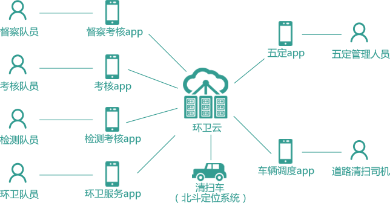

“以克论净”环卫云概述
"以克论净"环卫云是"以克论净"环卫精细化管理模式的信息化支撑平台，
通过“定责任区、定责任人、定标准定时限、定奖罚”的“五定”管理措施，
综合监管工地及出入口、车辆道路遗撒、临街门前三包、流动摊位环境卫生等四类垃圾产生源头，
采用手机软件、车载北斗定位系统、移动网络、软件云服务（SAAS）、大数据分析等信息化技术手段，
通过建设环卫源头管控、五定优化配置、考勤考核、职工服务、工具管理等五个信息化系统，
实现智能管控、智能考勤、智能考核、智能派遣、智能监督、全程透明的长效管理机制。
“以克论净”环卫云解决的问题
 工地管理不到位
商户责任未落实
工地管理不到位
商户责任未落实
环卫工作效率低
环卫队伍缺关怀
控源头 增效率 以人为本
“以克论净”环卫云的组成部分

“以克论净”环卫云的主要功能
环卫源头管控子系统
管理和设定车辆遗撒、商户门前、工地出口、流动摊位的环卫管控点位并监督上报违规事件
五定配置管理子系统
定区域、定人员、定任务、定标准、定奖罚，设定各项参数
考勤考核子系统
动态管理排班日程，移动考勤
职工服务子系统
提供以人为本的环卫职工服务平台
工具管理子系统
工具管理与工具培训管理